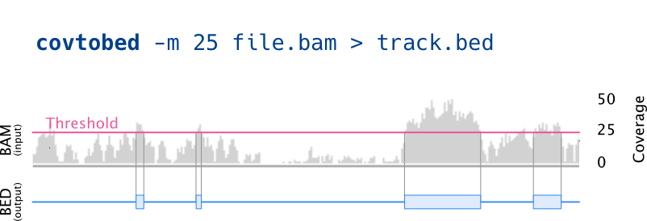

covtobed
A tool to generate BED coverage tracks from BAM files


Features
🚀 Stream Processing
Read BAM files from streams and pipes, perfect for bioinformatics pipelines
🧬 Strand-specific Analysis
Output coverage separately for forward and reverse strands
📊 Physical Coverage
Calculate physical coverage for paired-end and mate-pair libraries
⚡ High Performance
Faster than bedtools with memory-efficient algorithms
🔧 Flexible Filtering
Filter by coverage, quality, length, and alignment validity
📝 Multiple Formats
Output in BED format or counts format for different use cases
Installation
Usage
Basic Usage
covtobed [options] [BAM]...Common Examples
Basic Coverage
covtobed demo.bam > coverage.bedFilter Low Coverage
covtobed -m 10 demo.bam > high_coverage.bedStrand-specific Coverage
covtobed --output-strands demo.bam > stranded_coverage.bedPhysical Coverage
covtobed --physical-coverage paired.bam > physical_coverage.bedPipeline Usage
bwa mem genome.fa reads.fq | samtools view -bS | \
samtools sort | covtobed --max-cov 5 | \
bedtools merge > low_coverage.bedCommand-line Options
⚠️ Version 1.4.0 Breaking Change
As of version 1.4.0, invalid alignments are discarded by default (duplicates, failed QC, non-primary). Use --keep-invalid-alignments for legacy behavior.
Testing
Continuous Integration
This repository is automatically tested at each release by GitHub Actions.
Enhanced Test Suite (v1.4.0+)
covtobed includes a comprehensive testing framework:
# Run all tests (unit, integration, benchmarks)
cd test
bash run_tests.sh --all
# Run specific test types
bash run_tests.sh --unit # Unit tests with Catch2
bash run_tests.sh --integration # Enhanced integration tests
bash run_tests.sh --benchmark # Performance benchmarksTesting Components:
- Unit tests: Using Catch2 framework for core classes
- Integration tests: Comprehensive functional testing with colored output
- Benchmarks: Performance testing with Google Benchmark
- Test data generation: Synthetic BAM/SAM file creation
Performance
covtobed is generally faster than bedtools genomecov while providing additional features.
Benchmark Results
| Operation | Time | Description |
|---|---|---|
| Coverage Increment | 1.39 ns | Core coverage calculation |
| Priority Queue (100 items) | 4.5 μs | Alignment end tracking |
| Interval Intersection | 0.167 ns | Genomic interval operations |
For detailed performance comparisons and benchmarking data, see the benchmark directory.
Version History
Version 1.4.0 🆕
Breaking change: Default behavior now discards invalid alignments. Added --keep-invalid-alignments flag for legacy behavior. Improved error checking for conflicting flags.
Version 1.3.x
Enhanced filtering and output options
Version 1.2.0
Introduced the -z flag to skip reference shorter than a specified length (useful in fragmented metagenomic datasets)
Version 1.1.0
New feature: -d, --discard-invalid-alignments flag to discard invalid alignments (PCR duplicates, failing QC, supplementary)